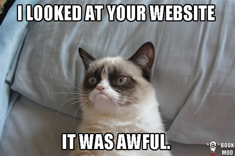

Credits
Authors
- Rogan Creswick creswick@galois.com
- Trevor Elliott
- Benjamin Jones

Rogan Creswick and Benjamin Jones
Consistency in user interfaces follows the second law of thermodynamics.
—Jakob Nielsen (1989)
We can all think of inconsistent user interfaces!
[In Windows 8] you have this shiny tablet interface, and you sit and you use then you press the wrong button then it slaps you in the face and Windows 7 is back. And then you think OK, this is familiar, so you’re kind of getting into it and whack [Windows 8 is back].
—Mark Shuttleworth, OSCON 2012
Image credit: Martem Telecontrol Systems
There is a lot of repetition...
Every text input field should have a label.
With FiveUI, you can:
Example:
exports.name = "Don't use empty headings";
exports.description = "Empty headings confuse layout";
exports.rule = function(report) {
$5(':header').each(function(i, elt) {
if ($(elt).text() == '') report.error('Heading is empty', elt);
});
}
(Image credit of XKCD)
{ "name": "Locate Uncommon Words.",
"description": "Searches for words that may be confusing to some readers.",
"dependencies": ["upGoerFive-deps.js"], // dependencies copiled with browserify
"rules": ["upGoerFive-rule.js"]
}
Example:
exports.name = "imagesAltText";
exports.description = "Each image should have an alternative text description";
exports.rule = function(report) {
fiveui.query('img')
.filter(function (i) {
var altAttr = $(this).attr('alt');
return altAttr == undefined || altAttr == '';
})
.each(function (i, e) {
report.error('Image has no alt text', e);
});
};
/
#